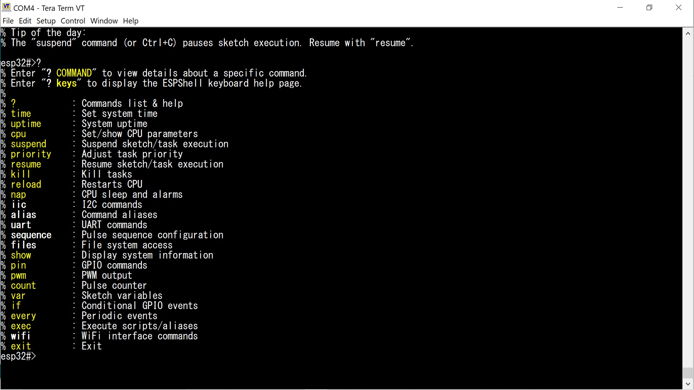
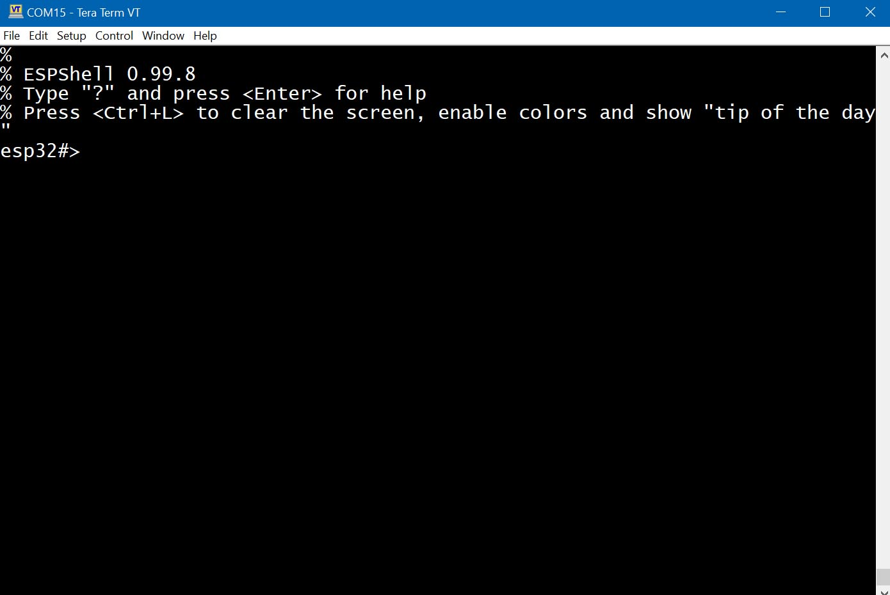
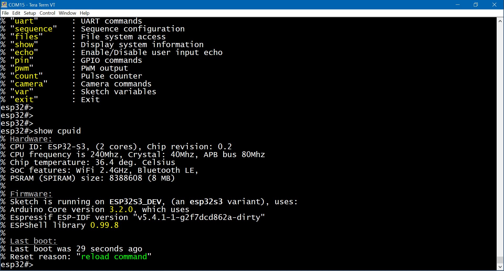
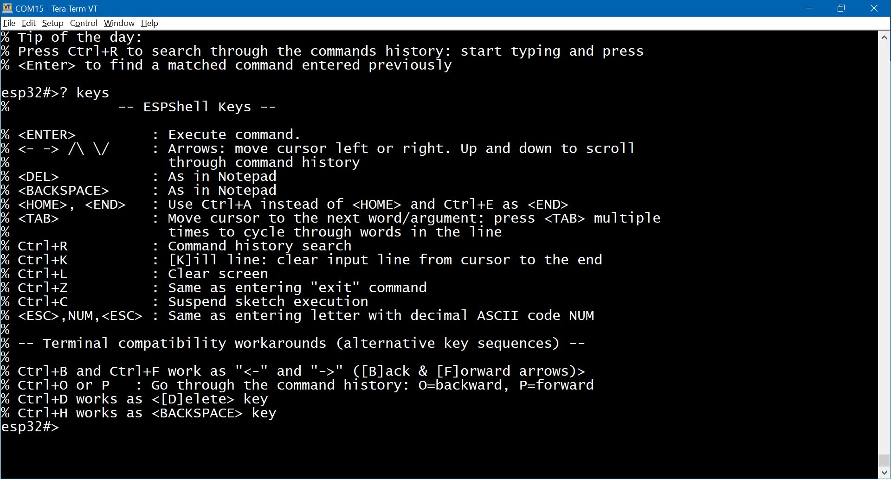
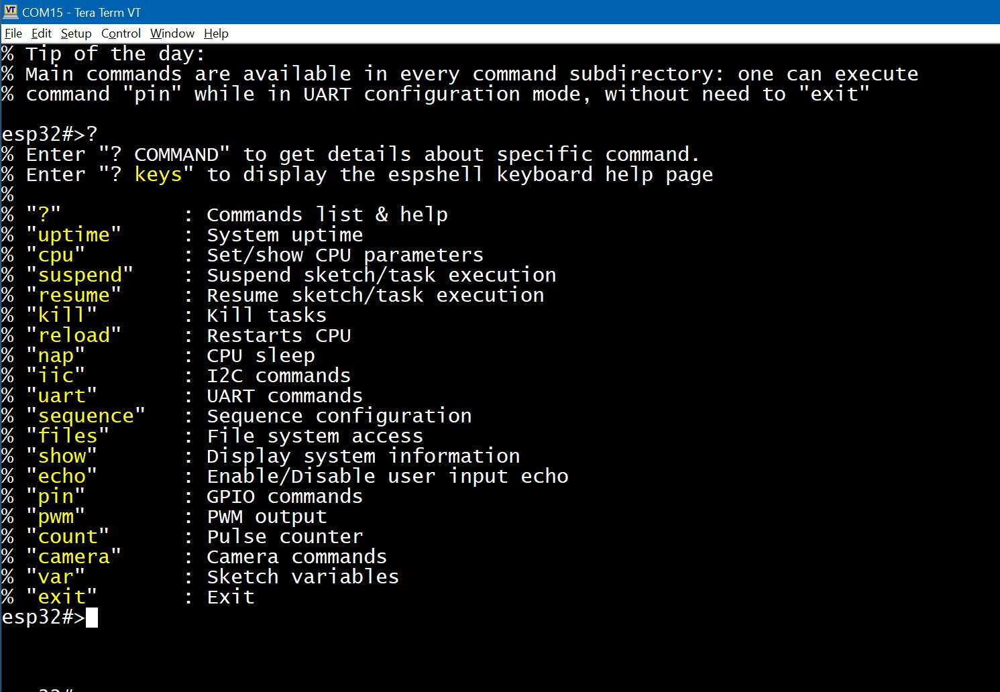
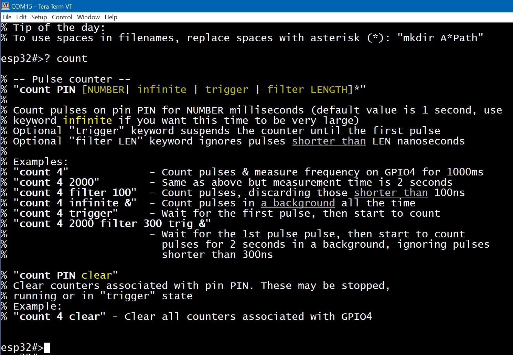

This is a debugging/development tool (a library for Arduino framework) for use with Arduino projects on ESP32 hardware.
Provides a command line interface (CLI) on serial port running in parallel to your Arduino sketch. It is not standalone program - this tool attaches to the user sketch (at compile time) and enchances any sketch (even an empty one) with a shell.
User can enter and execute commands (there are many built-in commands) in a way similar to Linux shell while their sketch is running. There are commands to control sketch execution (to some extent) : commands to suspend or resume sketch execution. One can simply press Ctrl+C to suspend sketch while shell will continue to work.
User interacts with ESPShell either through Arduino IDE Serial Monitor or through any other communication software like PuTTY, TeraTerm, Linux "cu" utility and many others. Developer of this library uses TeraTerm on Windows 10. Default settings for both Arduino IDE Serial Monitor and TeraTerm are shown on screenshots: for TeraTerm and for Arduino IDE Serial Monitor. ESPShell echoes user input so "local echo" must be disabled (see screenshots above)
This library can be useful for developers who are interfacing new I2C or UART devices as espshell has commands to create/delete hardware interfaces, send/receive data. Interfacing GPS (uart-based) chips or GSM modems, making libraries for I2C devices.
Developers, who do home automation: shell has commands to do whatever one wants with GPIO (check out GPIO commands), so interfacing relays now don't even require you to write any code. There are PWM generator and a frequency meter, a pulse counter and a pulse pattern generator are available on any GPIO.

Fig. 1: ESPShell, how does it looks like
The main idea behind this library is to be able to make changes without recompiling/reuploading your sketch every time when all you want is to make small changes or perform an experiment. That means much less "change / recompile / upload / run / see the result" cycles.
Another point is to have execution control over the sketch and be able to examine sketch variables;
Sketch uses wrong pin number to access external device? That can be changed from ESPShell.
Do we need to change UART/I2C/etc interface speed? Can be done by shell commands.
I2C bus scan, pause sketch execution, talk directly to GPS or GSM modem connected to uart interface, talk directly to I2C devices, like RTC or EEPROM, change / display sketch variables and many more can be done by entering shell commands.
This library is available via the Arduino Library Manager:
1. Open the Library Manager
2. Search for espshell
3. Choose the latest version and click Install
To install manually (e.g., the latest source code from GitHub):
1. Create the folder: `/YourSketchBook/libraries/espshell`
2. Copy the library contents (`/docs`, `/src`, `/examples`, etc.) into that folder
3. Restart the Arduino IDE
This library does not require you to call any functions to start the shell, except one line of
code: add
#include "espshell.h"somewhere at the beginning of your sketch and thats it.
Compile and upload your sketch as usual. ESPShell starts automatically when your sketch starts, by intercepting execution control and starting its own task. Shell intercepts control at the very beginning, before Arduino's setup() and loop(), before ESP-IDF's app_main()
When ESPShell starts it displays a welcome banner and is ready to accept commands:

Fig. 1: Welcome Banner
Note: ESPShell waits for Serial to become initialized; if Serial is not initialized by user sketch (i.e. Serial.begin( ... ) was never called) then ESPShell will be inactive, sleeping, waiting for the Serial to start (i.e. waits for sketch to call Serial.begin( ... ) ). If ESPShell was set up to use some other UART (e.g. UART1) then ESPShell will wait for Serial1.begin( ... ).
ESPShell provides a command line interface (CLI), with command line editing capabilities, commands history and syntax coloring;
ESPShell works fine in Arduino IDE's Serial Monitor, however connecting to the shell through terminal software is preferred. Author uses TeraTerm on Windows but any other software will do the job. Arduino Serial Monitor is not a terminal program and that fact prevents some features of ESPShell to be used: syntax coloring, hotkeys, UART bridge and others.
User interacts with the shell through the Serial interface (UART or USB-CDC) by entering commands and/or pressing hotkeys; ESPShell displays its prompt (e.g. "esp32#>"), reads and executes commands entered by user - in a way similar to Linux shell: parses user input, performs requested actions, displays errors if there were any and the cycle repeats.

Fig. 2: Typical espshell session: user executes "show cpuid" command
These keys are recognized by ESPShell:
Key | Meaning / Action performed
----------------+---------------------------------------------------------------
[ENTER] | Execute commands, interrupt running commands
|
[ARROWS] | Arrows: move cursor ← or →. Up ↑ and ↓ down arrows scroll
| through the command history.
|
[DEL] | As in Notepad
|
[BACKSPACE] | As in Notepad
|
[HOME] and [END] | These two do not work. Instead use Ctrl+A as <HOME> and Ctrl+E
| as <END>.
|
[TAB] | Quick jump from one word in the line to another. Fast switching
| between command arguments: continously press to cycle through
| all arguments/words in the command line
|
Ctrl+R | History search. Press Ctrl+R and start typing. Press <ENTER>
| to search for command executed before
|
Ctrl+K | Clear the line from cursor to the end
|
Ctrl+L | Clear the screen, keep user input, enable colors and show a hint
|
Ctrl+Z | Same as entering "exit" and pressing <ENTER> : moves up one level
| in command hierarchy: there are main commands and commands that
| are arranged as subdirectories. Ctrl+Z is used to exit such subdirectories.
|
Ctrl+C | Suspend sketch execution. Resume with "resume" command.
|
[ESC] 56 [ESC] | Entering an arbitrary ASCII character: Press <ESC>, then enter 1, 2 or 3 digit
| decimal ASCII code and pressing <ESC> again.
| Example: Send a break (Ctrl+C, ascii code 3) : <ESC>3<ESC>
|
[ESC] [BACKSPACE] | While <BACKSPACE> simply erases 1 character, pressing <ESC> and then <BACKSPACE>
| will erase 1 word
Please note that help page on key combinations can be obtained by executing shell command "? keys":

Fig. 3: Built-in help page ? keys
By entering "? keys" command one can find key combinations which can be used on "dumb" terminals: if (for example) arrows keys in your terminal are not working correctly then you can use Ctrl+F and Ctrl+B as an alternative: Ctrl+F moves cursor [F]orward (→), Ctrl+B moves it backwards (←)
Keys should be more or less intuitive for Linux shell users.
NOTE: Simple terminal programs like Arduino Serial Monitor can not send Ctrl+C and Ctrl+Z keycodes which are essential in GSM/LTE modems.
ESPShell won't autocomplete commands for you on pressing [TAB]: instead ESPShell simply accepts non-completed input, i.e. commands and command arguments can be shortened. Lets look at the difference:
In Linux shell (say, bash) one types "upt" and presses <TAB> to let the shell autocomplete the command to "uptime".
In contrast in ESPShell one can simply type "upt" (or even "up") and press <Enter>. ESPShell does not require anyone to type command "sequence": "seq" is more than enough.
Commands such as (for example) "pin 19 out high delay 500 low delay 100" can be written as "p 19 o h d 500 l d 500" and it will be understood by the shell.
ESPShell does its best to distinguish between shortened commands to avoid unintended command execution: commands "uptime" and "uart 1" can be both shortened to "u". Simply because "uptime" command has no arguments while "uart" always have an argument the shell is able to understand that "u 1" is "uart 1", not "uptime". However it is not always the case so do not overshorten: "sh c" can be either "show counters" or "show cpuid" and in this case ESPShell picks up first command in the list, in this case it will be "show counters". ( Command list can be obtained by entering command "?" or "help" )
ESPShell tries to be informative and has built-in help system which can do a few things - provide manual pages for commands and provide details & possible solutions when errors and failures occurs: e.g. an attempt to use non-existent pin will most likely result in a message about pin numbers available on given board.
Help system is available via "?" command/hotkey: as a command it displays manual pages for commands, displays the list of available commands. As a hotkey it displays help for the command user currently entering.
Listing of all available commands is done by typing "?" and pressing <Enter>:

Fig. 4: Available commands
Please note that iic, uart, sequence, files, camera are command directories each with its own set of commands.
User can read help pages for commands by entering a question mark "?" followed by keywords: either shortened or full.
E.g. to read manual page on command "sequence" one can enter "? seq" and press <ENTER>; other examples are "? pin",
"? count" and so on: a question mark and command name will display help pages
for commands
Below is the example of "? count" execution:

Fig. 5: Built-in help page for command count
If, however, you would like to read help pages during command entering (e.g. you don't remember what next argument should be) then just press "?" and help page will appear above your input You can try to type "cou" and press "?" to see "count" command help page.
The "?" is a hotkey and this behaviour might be annoying in cases when you need to enter actual symbol "?" and not invoke help system instead. For example, you are writing "Hello World?" string into some file: pressing "?" will invoke help page and this is not what we want. Well, one of the solutions is to disable "?" hotkey processing by executing
esp32#>var bypass_qm 1command. (Command var here sets internal shell variable "bypass_qm" to 1). Help subsystem still will be available but instead of "?" one have to type "help"
When typical help page is displayed, one may notice that special symbols (along with colors, on color terminals) are used to describe command syntax. Command syntax can be found at the very beginning of any help page. Lets look at help page for command "count": (see Fig. 5, or type "? count" and press <ENTER>)
esp32#>? count
% -- Pulse counter --
% "count PIN [NUMBER | trigger | filter LENGTH]*"
%
% Count pulses on pin PIN for NUMBER milliseconds (default value is 1 second)
% Optional "trigger" keyword suspends the counter until the first pulse
% Optional "filter LEN" keyword ignores pulses shorter than LEN nanoseconds
...
...
This is the very first lines of a help page "? count". Here we can see those special symbols: square brackets "[" and "]", a vertical bar "|", an asterisk "*" and some words typed in UPPERCASE.
| Symbol | Meaning |
|---|---|
UPPERCASE | A number or some text string. Any user input. Example help page above says that command "count" has 3 such parameters: pin number, measurement time and length. In majority of commands an UPPERCASE argument is a number, however some commands also may expect text |
lowercase | These are keywords: command name itself, words "trigger" and "filter"; On help pages these are usually yellow (command name is white) |
[ ] | Square brackets are used to denote OPTIONAL parameters. On color terminals these are displayed in dark yellow color. Example above has only 1 mandatory parameter (pin number) while rest are optional and can be omitted |
| | Verical bar: this is simply logic "OR" operation. In sence "this OR that". Example above says that we can enter a NUMBER or the "trigger" keyword or the "filter" keyword plus LENGTH parameter |
* | Located next to closing bracket (i.e. ")*" or "]*") indicates, that anything within the brackets can appear multiple times. |
Other symbols that are also used in help pages (but not in example above) are range symbol (double dot, ".." ) and mandatory symbol ( rounded brackets, "()"):
| 1..10 | A number in range from 1 to 10 inclusive |
| (arg1|arg2|...|argN)* | Mandatory argument: any combination of arg1 and arg2 but not empty one (at least one argument must be specified) |
| [arg1|arg2|...|argN]* | Optional argument: any combinations of arg1 and arg2 including empty argument |
By default all ESPShell commands are blocking (well, most of them, not all). That means that the shell will wait for command to finish before starting to accept new input: commands executed in sequence, one by one.
This behaviour could be changed by using an & symbol:
Adding "&" as very last argument to any command instructs ESPShell to execute this particular command as separate task, in parallel to other processes. This behaviour is well known to Linux users, where & is used to run commands in background.
This option (background execution) is especially useful with commands "pin" and "count" which may take long time to finish. Every running background command allocates around 5000 bytes of stack memory which is freed after execution
Any background command can be stopped by using command kill
ESPShell commands are grouped into command directories: commands related to UART are in "uart" directory, commands dealing with files are in "files" directory and so on. Main command directory is what you see when espshell starts. Main command directory contains commands AND other command directories; you can think of command directories as of real filesystem directories filled with executable files
If one wants to execute UART-related commands he/she must enter the corresponding command directory:
Example: entering UART configuration mode
esp32#>uart 0
esp32-uart0>
Executing command "uart 0" switches current command directory to UART0 command directory; pressing then "Ctrl+Z" or executing "exit" command changes command directory back to the Main.
When inside of any command directory, commands from the outside are available and can be executed even if they don't show up on command list:
Example:
→Entering UART0 command directory:
esp32#>uart 0
% You are about to configure the Serial espshell is running on. Be careful
% Entering UART configuration mode. Ctrl+Z or "exit" to return
% Hint: Main commands are still avaiable (but not visible in "?" command list)
→List all available commands:
esp32-uart0>?
% Enter "? command" to get details about specific command.
% Enter "? keys" to display the espshell keyboard help page
%
% "?" : Commands list & help
% "up" : Initialize uart (pins/speed)
% "baud" : Set baudrate
% "down" : Shutdown
% "read" : Read data from UART
% "tap" : Talk to device connected
% "write" : Send bytes over this UART
% "exit" : Exit
→Execute command, which is not on the list but exists in main commands list:
esp32-uart0>uptime
% Last boot was 17 seconds ago
% Restart reason was "Board power-on"
esp32-uart0>
In example above shell searches Main command directory after it realizes that there is no command "uptime" in uart0 directory,
To exit command directory command "exit" is used. Note: Ctrl+Z is a hotkey for command "exit"
Other command directories ESPShell has are: uart, i2c, files, sequence and camera settings
| Command | Description |
|---|---|
pin PIN [ARG1 | ARG2 | ... | ARGn ]* Various pin (GPIO) commands. Command sequence of arguments (which can be as small as just 1 argument) of which 1st argument is always a pin number. Command allows to create tiny "programs" (sequence of actions and delays), which are executed on pins (GPIOs). More information and examples on this command can be found in documentation file (related command: "show iomux") | |
pwm PIN FREQ [DUTY [CHANNEL]] PWM generators. | |
count PIN [NUMBER | infinite | trigger | filter LENGTH]* Pulse counter / frequency meter. For details refer to Pulse Counter / Frequency meter (related command: "show counters") | |
var [NUMBER | NAME | NAME VALUE ] Sketch variables manipulation. See this page on how to use this feature in your code; Command is used to display/change sketch variables in runtime. Simple types and arrays of simple types are supported; Another use of this command is conerting numbers to/from binary/octal/dec/hex | |
iic NUM Enter I2C bus/interface mode.
| |
uart NUM UART X interface access. | |
sequence NUM Signal generator mode. | |
files Enter file manager mode. | |
| show | show KEYWORD [ARG1 | ARG2 | ... | ARGn]* In ESPShell user can display various information (about the sketch, cpu, memory, etc) by using dedicated "show" command. Depending on a keyword used there may be 0, 1, 2 or more arguments:
|
kill [-9 | -15] TASK_ID Process control commands: kill, suspend or resume a task. | |
echo [on | off | silent ] colors [on | off | auto ] history [on | off ] tty NUM These 4 commands are used to control input and output of the shell; Read this page for details on command syntax and detailed description. | |
uptime | uptime Shows how much time has passed since last boot; shows the last reboot cause. There are no dedicated documentation file for this command: it is simple, no-args command |
cpu FREQ Set CPU frequency to FREQ MHz. List of supported frequencies is displayed on attempt to set unsupported frequency (e.g. 99Mhz):
Example:
esp32#>cpu 99
% Supported frequencies are: 240, 160, 120, 80, 40, 20 and 10
| |
reload | reload Reboots ESP32. This is a software restart which does not reset hardware (peripherial) registers |
nap | nap [NUM [seconds | minutes | hours]] Put CPU into light sleep mode.
Example:
esp32#>nap
% Entering light sleep
With argument: puts CPU into light sleep for NUM seconds, minutes or hours. CPU wakes up by timer only, there are no other ways to cancel the sleep Example: put CPU into light sleep for 10 minutes: esp32#>nap 10 minExample: put CPU into light sleep for 100 seconds: esp32#>nap 100or esp32#>nap 100 secondsNOTE: You can not set wake up time like that: "10 hours 50 minutes". Instead, use either "11 hours" or "650 minutes" |
ESPShell library Copyright (c) 2024, 2025 Viacheslav Logunov <vvb333007@gmail.com>, all rights reserved
ESPShell contains code from Editline library (ancient version, from here):
Copyright 1992,1993 Simmule Turner and Rich Salz, All rights reserved This software is not subject to any license of the American Telephone and Telegraph Company or of the Regents of the University of California. Permission is granted to anyone to use this software for any purpose on any computer system, and to alter it and redistribute it freely, subject to the following restrictions: 1. The authors are not responsible for the consequences of use of this software, no matter how awful, even if they arise from flaws in it. 2. The origin of this software must not be misrepresented, either by explicit claim or by omission. Since few users ever read sources, credits must appear in the documentation. 3. Altered versions must be plainly marked as such, and must not be misrepresented as being the original software. Since few users ever read sources, credits must appear in the documentation. 4. This notice may not be removed or altered.
ESPShell contains code from Arduino Core 3.0.5
Copyright 2015-2016 Espressif Systems (Shanghai) PTE LTD Licensed under the Apache License, Version 2.0 (the "License"); you may not use this file except in compliance with the License.
{kind=link}
{kind=link}
{kind=link}
{kind=link}